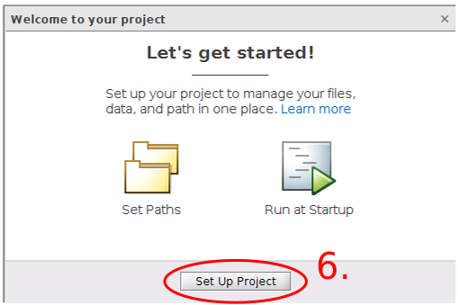

Project Preparation
The first steps to setup a scalable software project are none trival and need a good strcuture for later project expands. Either to setup further new projects a well known scalable project structure helps to combine different software parts to bigger environment packages. Therefore a project preparation flow needs to be documented. It unifies the outcome of software projects and part guarantee certain quality aspects.
The following steps can be used as guidance to establish a propper Matlab project structure in general. Each step is documented with screenshots to give a comprehensible explanation.
Contents
Create Main Project Directory
The main project directory contains only two subfolders. The first one is the Toolbox folder where the project, m-files etc. are placed. The second folder is the hidden Git repository folder which keeps the versionation.
- Create an empty project folder, open Matlab navigate to folder path.
- Right click in the Current Folder pane and create New > Folder "Toolbox".
- Open a Git terminal and in the project directory and initialize an empty Git repository.


Create Matlab Project with Git Support





Created on September 30. 2020 by Tobias Wulf. Copyright Tobias Wulf 2020.